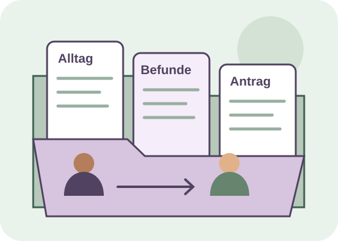

Ab hier ist eine GdB-Feststellung vorgesehen.
Niedersachsen · Stand 27.10.2026
Teilhabe verstehen.
Den Antrag vorbereiten.
Ihr Wegweiser zum Grad der Behinderung: verständlich erklärt, mit Bildern, Fallbeispielen und einer eigenen Unterlagenübersicht.

Allgemeine Orientierung zur sozialen Teilhabe. Die zuständige Behörde entscheidet über GdB und Merkzeichen. Alle Fallbeispiele sind erfunden; persönliche Gesundheitsangaben werden hier nicht abgefragt.
Wie möchten Sie lesen?
Zwei verschiedene Blickwinkel
GdB, Pflegegrad und Diagnose unterscheiden
Eine Diagnose benennt eine Gesundheitsstörung. Beim GdB geht es um die längerfristige Beeinträchtigung der Teilhabe. Beim Pflegegrad werden Selbstständigkeit und Fähigkeiten bei bestimmten Alltagstätigkeiten betrachtet.
Gleichstellung im Arbeitsleben unter weiteren Voraussetzungen prüfen.
Ab hier liegt bei den gesetzlichen Voraussetzungen Schwerbehinderung vor.
Begriffe vertiefen: Dauer, Verlauf und Heilungsbewährung
Was heißt längerfristig?
Die gesetzliche Definition bezieht sich auf Beeinträchtigungen, die mit hoher Wahrscheinlichkeit länger als sechs Monate an der gleichberechtigten Teilhabe hindern können. Beginn, Verlauf und voraussichtliche Dauer verständlich beschreiben.
Was heißt Heilungsbewährung?
Bei bestimmten Gesundheitsstörungen wird nach Behandlung für einen begrenzten Zeitraum die weitere Entwicklung abgewartet. Dafür gelten besondere Bewertungsregeln. Eine spätere Prüfung und das Ablaufdatum des Ausweises sind unterschiedliche Angaben.
Für Sonderfälle und die Bewertung der einzelnen Funktionssysteme die aktuellen versorgungsmedizinischen Grundsätze und fachliche Beratung heranziehen. Die Übersicht in dieser App ersetzt keine individuelle Feststellung.
Die Unterschiede an Alltagssituationen verstehen
Eine Diagnose allein legt weder GdB noch Pflegegrad fest. Die beiden Verfahren haben eigene Maßstäbe. Wählen Sie eine erfundene Alltagssituation und vergleichen Sie die Fragen.
Eine erfundene Person vermeidet längere Wege und braucht unterwegs Unterstützung.
Welche Auswirkungen bestehen?
Welche Wege, Besorgungen und sozialen Aktivitäten sind eingeschränkt? Welche Barrieren und gesundheitlichen Auswirkungen bestehen längerfristig?
Welche Unterstützung ist nötig?
Kann die Person sich im Wohnbereich selbst fortbewegen? Welche persönliche Unterstützung ist bei den bewerteten Alltagstätigkeiten nötig?
Es gibt hier keine Umrechnung zwischen GdB und Pflegegrad. Zum gesonderten Pflegegradrechner für Erwachsene.
Grundlagen: GdB und Schwerbehinderung · § 2 SGB IX Feststellung und Gesamtbewertung · § 152 SGB IX BMG · Pflegebedürftigkeit und Pflegegrade
Eine erfundene Geschichte in sechs Bildern
Alex bereitet einen Antrag vor
Ein Beispiel zum Mitgehen und Nachlesen. Die Geschichte beschreibt einen möglichen Weg und verspricht kein Ergebnis.
1 · Alex bemerkt eine Veränderung
Alex möchte wieder am gemeinsamen Spieleabend teilnehmen. Längere Wege und die anschließende Erschöpfung erschweren das. Alex beschreibt zunächst, welche Aktivitäten betroffen sind und was weiterhin gelingt.
Mit einer konkreten Alltagssituation beginnen. Nicht zuerst nach einer passenden Zahl suchen.
Nur auf Wunsch: alle 12 Sekunden ein neues Bild, ein Durchlauf. Jeder Bildschritt kann selbst gewählt und beliebig lange gelesen werden.
Die ganze Bildergeschichte in Ruhe lesen
1 · Alex bemerkt eine Veränderung
Alex möchte wieder am gemeinsamen Spieleabend teilnehmen. Längere Wege und die anschließende Erschöpfung erschweren das. Alex beschreibt zunächst, welche Aktivitäten betroffen sind und was weiterhin gelingt.
Für Ihre Vorbereitung: Mit einer konkreten Alltagssituation beginnen. Nicht zuerst nach einer passenden Zahl suchen.
2 · Den Alltag nachvollziehbar festhalten
Alex notiert eine typische Woche: Ein kurzer Besuch gelingt mit einer Pause; ein längerer Ausflug wird abgebrochen. Auch bessere Tage werden aufgeschrieben. Die Notizen zeigen Bedingungen und Verlauf.
Für Ihre Vorbereitung: Datum, Tätigkeit, konkrete Auswirkung und hilfreiche Anpassungen festhalten. Nur tatsächliche Beobachtungen verwenden.
3 · Vorhandene Berichte ordnen
Alex bespricht mit einer behandelnden Person, welche aktuellen Befunde und Verlaufsberichte bereits vorliegen. Eine Mappe trennt Berichte, eigene Alltagsnotizen und offenen Rückfragen.
Für Ihre Vorbereitung: Eigene Beobachtungen und fachliche Befunde ergänzen sich. In der Übersicht notieren, was noch angefragt werden muss.
4 · Das offizielle Verfahren verwenden
Nach der Vorbereitung öffnet Alex die offizielle Antragsseite für Niedersachsen. Alex prüft Angaben, Anlagen und Einwilligungen, schließt das dort angebotene Verfahren ab und behält eine Kopie.
Für Ihre Vorbereitung: Die Vorbereitung in dieser App ist noch kein Antrag. Erst im amtlichen Verfahren einreichen und den Eingang dokumentieren.
5 · Rückfragen zuordnen
Es kommt ein Schreiben mit einer Rückfrage. Alex legt es zur Mappe, prüft das verlangte Dokument und notiert den im Schreiben genannten Termin. Bei Unklarheit fragt Alex bei der zuständigen Stelle nach.
Für Ihre Vorbereitung: Nur angeforderte oder relevante Ergänzungen passend zuordnen. Eine eigene Aufgabe hilft, den nächsten Schritt im Blick zu behalten.
6 · Den Bescheid in Ruhe verstehen
Alex liest Entscheidung, Begründung und Rechtsbehelfsbelehrung. Eine vertraute Person hilft beim Vergleich mit der Unterlagenübersicht. Offene Fragen werden notiert; bei Einwänden wird rechtzeitig Beratung gesucht.
Für Ihre Vorbereitung: Die Geschichte endet ohne vorgegebenen GdB. Ein Bescheid muss anhand der tatsächlichen individuellen Situation geprüft werden.
Ihr Anlass entscheidet
Welcher nächste Schritt passt?
Wählen Sie den Anlass. Der Wegweiser hilft beim Sortieren und trifft keine Entscheidung über Ihren Anspruch.
Erstantrag vorbereiten
Aussagekräftige Berichte und eigene Alltagsbeispiele ordnen. Danach das offizielle niedersächsische Verfahren öffnen.
Zum AntragGrundlagen: Niedersachsen · Antragstellung und Feststellung Niedersachsen · Fragen zum Verfahren und zum Bescheid Form und Frist des Widerspruchs · § 84 SGG
Schritt für Schritt
Den Antrag in Niedersachsen vorbereiten
Online-Antrag, Papierformular und persönliche Vorbereitung sind verschiedene Schritte. Hier können Sie sich orientieren; eingereicht wird bei der zuständigen Stelle.
Den Ablauf mit Bildern ansehen
1 · Anlass klären: Erstfeststellung, Veränderung oder Einwände gegen einen Bescheid unterscheiden.
Die Bilder werden nacheinander hervorgehoben und erklärt. Sie können pausieren oder jeden Bildschritt einzeln wählen. Ein Durchlauf endet automatisch. Es wird kein Antrag versendet.
Online bei LS-Online
Das offizielle Landesportal bietet Erst- und Änderungsanträge sowie Anträge für Ausweis und Beiblatt. Für die Online-Antragstellung ist eine Anmeldung mit BundID vorgesehen.
Offizielle Online-Anträge öffnenAmtliche Formulare und Merkblätter
Die Landesübersicht enthält Formulare zum Ausfüllen am Bildschirm und zum handschriftlichen Ausfüllen. Lesen Sie die dortigen Hinweise zu Angaben, Einwilligungen und Unterschriften.
Amtliche Formulare und Merkblätter öffnenDie Angaben im Formular mit Beispielen durchgehen
Diese Bildkarten erklären die Vorbereitung. Maßgeblich bleibt das aktuelle amtliche Formular. Ausweisnummern, Steuer-ID und Gesundheitsunterlagen nur in das offizielle Verfahren eingeben.
Persönliche Angaben
Kontakt- und Zuordnungsangaben im amtlichen Antrag sorgfältig prüfen. Persönliche Identifikationsnummern nur im offiziellen Verfahren eingeben.
Anlass des Antrags
Erstantrag oder Änderung passend auswählen. Bei Änderung den bisherigen Bescheid zuordnen.
Gesundheitsstörungen und Auswirkungen
Anhaltende Einschränkungen verständlich beschreiben. Eine Diagnose und ihre konkrete Auswirkung unterscheiden.
Behandelnde Stellen und Berichte
Angeben, wer welche Beschwerden behandelt und welche aussagekräftigen Unterlagen vorhanden sind.
Einwilligungen und Vertretung
Erläuterungen zur Befundanforderung, Datenübermittlung und Unterschriften im amtlichen Formular lesen. Bei Vertretung den passenden Nachweis ergänzen.
Steuer-ID und Datenübermittlung
Für Feststellungen ab 2026 verweist das Landesamt bei der Nutzung des Behindertenpauschbetrags auf die erforderliche Datenübermittlung an die Finanzverwaltung. Die aktuellen Hinweise im amtlichen Formular lesen. Die Steuer-ID gehört nicht in die Notizen dieser App.
Abschluss und Nachweis
Alles prüfen, unterschreiben beziehungsweise das offizielle Online-Verfahren abschließen. Kopie und Eingangsbestätigung aufbewahren.
Grundlagen: Niedersachsen · offizielle Online-Anträge mit BundID Niedersachsen · Antragsformulare und Merkblätter
Übersicht statt Sucherei
Eine nachvollziehbare Unterlagenmappe
Ordnen Sie vorhandene Berichte und die eigenen Alltagsbeispiele. Notieren Sie, was bereitliegt, was noch fehlt und wo Sie es finden.
Die acht Unterlagentypen genauer erklärt
Behandelnde Stellen
Namen, Fachrichtung und Behandlungszeiträume für den offiziellen Antrag zusammenstellen.
Aussagekräftige Befunde
Vorhandene aktuelle Berichte zu Funktionen, Verlauf und Behandlung prüfen.
Klinik- oder Rehaberichte
Relevante Entlassungsberichte auf Vollständigkeit und Aktualität prüfen.
Alltagsbeschreibung
Eigene Beispiele zu Auswirkungen und verbleibenden Fähigkeiten notieren.
Verlauf und Veränderungen
Bei einem Änderungsantrag seit wann was anders ist beschreiben.
Vorhandener Bescheid
Bei laufendem Verfahren Geschäftszeichen und bisherigen Bescheid bereitlegen.
Vertretung
Erforderliche Vollmacht oder Vertretungsnachweise prüfen.
Kopie und Eingang
Kopie der tatsächlich eingereichten Unterlagen und Zugangsnachweis behalten.
Die eigene Übersicht enthält Titel und Notizen zu Unterlagen. Die App lädt keine Befunde hoch und versendet keinen Antrag. Sie können die Übersicht drucken oder über die Druckfunktion als PDF speichern.
Grundlagen: Niedersachsen · Antragstellung und Feststellung
Das Zusammenspiel zählt
Warum mehrere Beeinträchtigungen keine Rechensumme sind
Für den Gesamt-GdB werden die Auswirkungen gemeinsam betrachtet. Sie können sich überschneiden, verschiedene Lebensbereiche betreffen oder sich verstärken. Addieren oder Mitteln ist keine zulässige Berechnung.
Verschiedene Lebensbereiche
Fiktiv: Gespräche in Gruppen gelingen nur mit besonderer Unterstützung. Zusätzlich ist das Greifen und Tragen erschwert. Die Auswirkungen betreffen unterschiedliche Tätigkeiten. Für die Gesamtbewertung wird beschrieben, was jeweils hinzukommt.
Ein Durchlauf endet automatisch. Sie können jederzeit pausieren oder eine Darstellung direkt wählen. Es werden keine Gesundheitsdaten bewertet.
Grundlagen: Versorgungsmedizinische Grundsätze · insbesondere Teil A
Vier erfundene Lernbeispiele
Den eigenen Alltag konkret beschreiben
Die Geschichten zeigen, wie man Auswirkungen und verbleibende Fähigkeiten verständlich schildert. Sie sind keine Musterantworten zum Übernehmen und enthalten keine GdB-Prognose.
Nora · frei erfunden
Wenn Wege und Greifen schwerfallen
Nora hat anhaltende Beschwerden an Beinen und Händen. Den kurzen Weg zur Bäckerei geht sie mit mehreren Pausen. Einkaufstaschen kann sie nicht zuverlässig tragen. Kleine Verschlüsse kosten viel Kraft; manches gelingt mit einem Hilfsmittel.
Von der allgemeinen Aussage zum konkreten Beispiel
Zu allgemein
Ich habe mehrere Erkrankungen und kann wenig machen.
Konkretes fiktives Beispiel
Auf dem Weg zur Bäckerei muss ich an zwei festen Stellen stehen bleiben. Meine Einkäufe liefert ein Dienst. Kleine Knöpfe schließe ich mit einer Knöpfhilfe; an beschwerdereichen Tagen übernimmt das meine Schwester.
Welche Unterlagen könnten das verdeutlichen?
- Aktueller fachärztlicher Bericht zu Funktionen und Verlauf
- Beschreibung von Wegen, Pausen, Hilfsmitteln und verbleibenden Fähigkeiten
Eine konkrete Tätigkeit ist aussagekräftiger als eine lange Liste von Diagnosen. Die beschriebenen Beispiele sind keine Vorgabe für Ihre eigenen Angaben.
Milan · frei erfunden
Wenn Belastung und Antrieb den Alltag verändern
Milan erlebt seit längerer Zeit wiederkehrende Phasen mit starker Erschöpfung und Angst. Manche Kontakte hält er per Nachricht aufrecht. Treffen sagt er häufiger ab. Mit einer vertrauten Person gelingt ein kurzer Termin eher; danach braucht er einen ruhigen Abend.
Von der allgemeinen Aussage zum konkreten Beispiel
Zu allgemein
Ich habe immer Angst und alles geht nicht.
Konkretes fiktives Beispiel
In der beschriebenen Woche habe ich zwei Treffen abgesagt. Den vereinbarten Termin habe ich mit Begleitung wahrgenommen. Während der Wartezeit half mir ein ruhiges Gespräch. Am nächsten Tag gelang mir ein Telefonat selbst.
Welche Unterlagen könnten das verdeutlichen?
- Behandlungsbericht zu Verlauf und konkreten Auswirkungen
- Eigene, datierte Beispiele für Kontakte, Belastung und gelingende Tätigkeiten
Auch psychische Beeinträchtigungen lassen sich konkret beschreiben. Gute und schlechte Phasen gehören zum Gesamtbild; absolute Formulierungen müssen zum tatsächlichen Alltag passen.
Elif · frei erfunden
Wenn Gespräche in Gruppen anstrengend sind
Elif nutzt Hörhilfen. Im ruhigen Einzelgespräch versteht sie vieles. In Gruppen verliert sie den Anschluss, wenn mehrere Menschen gleichzeitig sprechen. Sie bittet um einen ruhigen Platz und schriftliche Informationen.
Von der allgemeinen Aussage zum konkreten Beispiel
Zu allgemein
Ich kann wegen des Hörens an nichts teilnehmen.
Konkretes fiktives Beispiel
Im Einzelgespräch in einem ruhigen Raum verstehe ich die meisten Sätze. Beim letzten Gruppentreffen musste eine Person die wichtigsten Punkte einzeln wiederholen. Die schriftliche Zusammenfassung half mir danach.
Welche Unterlagen könnten das verdeutlichen?
- Audiologischer Befund und Angaben zu verwendeten Hilfsmitteln
- Konkrete Kommunikationssituationen und hilfreiche Anpassungen
Hilfsmittel, Bedingungen und verbliebene Fähigkeiten mitbeschreiben. Das Beispiel erlaubt keine Vorhersage eines Merkzeichens oder GdB.
Paul · frei erfunden
Wenn sich Beschwerden gegenseitig verstärken
Paul hat Orientierungsprobleme und Angst vor unbekannten Wegen. Eine Wegbeschreibung hilft ihm an vertrauten Orten. Bei Änderungen wird er unsicher und meidet anschließend weitere Termine.
Von der allgemeinen Aussage zum konkreten Beispiel
Zu allgemein
Zwei Erkrankungen müssen zusammen einen besonders hohen Wert ergeben.
Konkretes fiktives Beispiel
Als die Haltestelle verlegt wurde, konnte ich den Ersatzweg nicht allein finden. Danach habe ich auch einen anderen Termin abgesagt, obwohl der Weg dorthin vertraut war. Mit vorheriger Begleitung habe ich ihn später wieder genutzt.
Welche Unterlagen könnten das verdeutlichen?
- Berichte zu den jeweiligen Funktionsbeeinträchtigungen
- Beispiel, das die Wechselwirkung und ihren Verlauf sichtbar macht
Das Zusammenspiel erklären und denselben Effekt nicht mehrfach zählen. Die App vergibt auch in diesem Beispiel keinen Gesamt-GdB.
Buchstaben verständlich erklärt
Merkzeichen und mögliche Nachteilsausgleiche
Merkzeichen beschreiben zusätzlich festgestellte gesundheitliche Voraussetzungen. Eine Karte öffnen, um ihre Bedeutung und den nächsten Informationsschritt zu sehen.
GBewegungsfähigkeit im Straßenverkehr
Kennzeichnet eine erhebliche Beeinträchtigung der Bewegungsfähigkeit im Straßenverkehr. Entscheidend sind die festgestellten Voraussetzungen.
Für Mobilität auch die Regeln zu Beiblatt und Wertmarke nachlesen.
Amtliche ErläuterungenaGAußergewöhnliche Gehbehinderung
Steht für eine außergewöhnliche Gehbehinderung. Ein hoher GdB allein beschreibt dieses Merkzeichen noch nicht.
Parkerleichterungen und einen nötigen Parkausweis gesondert mit der zuständigen Stelle klären.
Amtliche ErläuterungenBBegleitperson im öffentlichen Verkehr
Weist die Berechtigung zur unentgeltlichen Mitnahme einer Begleitperson in öffentlichen Verkehrsmitteln nach.
Bei der konkreten Fahrt die geltenden Beförderungsregeln prüfen.
Amtliche ErläuterungenHHilflosigkeit
Kennzeichnet Hilflosigkeit im rechtlichen Sinn. Benötigte Anleitung oder Überwachung kann relevant sein; die Voraussetzungen werden eigenständig geprüft.
Pflegegrad und Merkzeichen H in den jeweiligen Verfahren getrennt prüfen lassen.
Amtliche ErläuterungenBlBlindheit
Kennzeichnet festgestellte Blindheit.
Geeignete Hilfen und mögliche Nachteilsausgleiche über die offizielle Übersicht erschließen.
Amtliche ErläuterungenGlGehörlosigkeit
Kennzeichnet festgestellte Gehörlosigkeit.
Kommunikationshilfen und die Regeln zum öffentlichen Verkehr nachlesen.
Amtliche ErläuterungenTBlTaubblindheit
Kennzeichnet festgestellte Taubblindheit.
Beratung zu passenden Kommunikations- und Teilhabehilfen nutzen.
Amtliche ErläuterungenRFRundfunkbeitrag
Betrifft festgestellte gesundheitliche Voraussetzungen für eine Ermäßigung beim Rundfunkbeitrag.
Den gesonderten Antrag und seine Voraussetzungen beim zuständigen Beitragsservice prüfen; das Merkzeichen löst keine automatische Zahlung aus.
Amtliche ErläuterungenArbeit, Mobilität, Steuern und Gebühren einordnen
Gleichstellung im Arbeitsleben
Bei GdB 30 oder 40 kann eine Gleichstellung infrage kommen, wenn ein geeigneter Arbeitsplatz behinderungsbedingt sonst nicht erlangt oder behalten werden kann. Die Agentur für Arbeit prüft weitere Voraussetzungen. Gleichstellung umfasst keinen Schwerbehindertenausweis und keinen Zusatzurlaub.
Gleichstellung bei der ArbeitsagenturNachteilsausgleiche gezielt nachlesen
Für Mobilität, Arbeit, Steuern und Gebühren gelten jeweils eigene Bedingungen. Die Landesübersicht führt zu den passenden Informationen. Ob ein weiterer Antrag oder Nachweis nötig ist, dort prüfen.
Offizielle Nachteilsausgleiche ansehenGrundlagen: Niedersachsen · Schwerbehindertenausweis und Merkzeichen Bundesagentur für Arbeit · Gleichstellung und Online-Antrag
Den Inhalt nachvollziehen
Bescheid verstehen und den nächsten Schritt planen
Der Feststellungsbescheid und der Ausweis erfüllen unterschiedliche Aufgaben. Prüfen Sie die Entscheidung anhand Ihrer Unterlagen und lesen Sie die Rechtsbehelfsbelehrung.
Einen erfundenen Bescheid mit Hinweisen ansehen
Frei erfundenes, stark gekürztes Lernmuster. Kein amtliches Formular und keine Entscheidung über eine echte Person.
LERNMUSTER · 15.10.2026 · AZ MUSTER-001
Feststellungsbescheid
Alle Hinweise zum Lernmuster lesen
Entscheidung: Was steht tatsächlich in Ihrer Entscheidung zu GdB und Merkzeichen? Die Zahl im Lernmuster sagt nichts über einen eigenen Anspruch aus.
Beginn: Beginn und gegebenenfalls Rückwirkung getrennt vom Ausstellungsdatum prüfen.
Grundlagen: Sind die eingereichten Berichte und die maßgeblichen Auswirkungen berücksichtigt? Offene Punkte konkret notieren.
Begründung: Nachvollziehen, wie die Behörde die Beeinträchtigungen gemeinsam betrachtet. Mehrere Einzelwerte nicht selbst addieren.
Rechtsbehelf: Den vollständigen Originaltext Ihres Bescheids lesen. Zustellung und Bekanntgabe können für die Frist entscheidend sein. Bei Unsicherheit rechtzeitig beraten lassen.
Wählen Sie einen Teil des Bescheids. Darunter erscheint, was Sie daran prüfen können.
Aktueller Bescheid erscheint falsch
Für einen Widerspruch gelten Form und Frist. Bei Bekanntgabe im Inland ist es grundsätzlich ein Monat ab Bekanntgabe, nicht ab dem aufgedruckten Datum. Prüfen Sie Ihre Rechtsbehelfsbelehrung. Die App berechnet diese Frist nicht.
Ein unterschriebenes Schreiben oder ein ausdrücklich zugelassener elektronischer Weg kann passen. Eine gewöhnliche E-Mail oder ein beliebiger Upload sollte nicht als sicher fristwahrend behandelt werden.
Situation hat sich später verändert
Ein Änderungsantrag betrifft die neue Situation. Die erneute Prüfung kann auch zu einem niedrigeren GdB führen. Eine laufende Widerspruchsfrist wird durch Abwarten oder einen neuen Antrag nicht ersetzt.
Bei Unklarheiten vorab Beratung nutzen. Bei Bedarf Akteneinsicht und die zugrunde gelegten Unterlagen anfragen; die Behörde klärt Umfang und Verfahren.
Anpassbare Mustertexte öffnen
Platzhalter ersetzen, Inhalt und zulässigen Übermittlungsweg prüfen. Die Texte werden nicht von der App versendet.
Erstantrag · anpassbares Muster
[Name und Anschrift] [Zuständige Stelle] [Datum] Antrag auf Feststellung einer Behinderung Hiermit beantrage ich die Feststellung einer Behinderung und des Grades der Behinderung sowie die Prüfung der in Betracht kommenden Merkzeichen. Meine Angaben und Unterlagen füge ich im amtlichen Antragsverfahren bei. Bitte bestätigen Sie mir den Eingang. [Unterschrift / Abschluss über das zugelassene Online-Verfahren]
Änderungsantrag · anpassbares Muster
[Name und Anschrift] [Zuständige Stelle] [Datum, Geschäftszeichen] Antrag auf Änderung der Feststellung Seit [Zeitpunkt] hat sich meine gesundheitliche Situation verändert. Konkret wirken sich die Veränderungen so aus: [Tätigkeiten, Auswirkungen und Verlauf sachlich beschreiben]. Ich beantrage die erneute Feststellung auf Grundlage der aktuellen Situation. Die relevanten Unterlagen und Angaben reiche ich im amtlichen Verfahren ein. [Unterschrift / zugelassener Online-Abschluss]
Widerspruch · anpassbares Muster
[Name und Anschrift] [Die im Bescheid genannte Stelle] [Datum, Geschäftszeichen] Widerspruch gegen den Bescheid vom [Datum] Hiermit lege ich gegen den oben genannten Bescheid Widerspruch ein. Eine Begründung reiche ich nach. Bitte ermöglichen Sie mir Akteneinsicht nach § 25 SGB X und teilen Sie mir mit, wie ich die der Entscheidung zugrunde gelegten Unterlagen einsehen beziehungsweise erhalten kann. Bitte bestätigen Sie den Eingang. [Unterschrift / zulässige elektronische Form beachten]
Grundlagen: Form und Frist des Widerspruchs · § 84 SGG Akteneinsicht · § 25 SGB X Niedersachsen · Fragen zum Verfahren und zum Bescheid
Die passende Stelle erreichen
Kontakt in Niedersachsen
Für ein laufendes Verfahren zuerst die im Schreiben genannte Dienststelle beachten. Die Zuständigkeit nach Wohnort über das offizielle Ortsverzeichnis prüfen.
Besuch · Hannover
Schiffgraben 30–3230175 Hannover
Standorttelefon: 0511 89701-0
Standort und Besuchsmöglichkeiten prüfenBesuch · Osnabrück
Iburger Str. 3049082 Osnabrück
Standorttelefon: 0541 5845-1
Standort und Besuchsmöglichkeiten prüfenZentrale Postanschrift für Antragsunterlagen
Niedersächsisches Landesamt für Soziales, Jugend und Familie31120 Hildesheim
Diese veröffentlichte zentrale Empfängeranschrift ist ohne Straße vollständig. Eine im konkreten Verfahren genannte abweichende Anschrift beachten.
Quelle der zentralen PostanschriftFür Fragen zum Feststellungsverfahren nennt das Landesamt die zentrale Service-Hotline 05121 304-100. Aktuelle Sprechzeiten und Besuchsmöglichkeiten auf der Standortseite prüfen.
Zuständige Stelle nach Wohnort suchenHäufige Fragen zum GdB-Bereich
Ist der GdB ein Prozentsatz?
Der GdB ist eine abgestufte Maßzahl für die Teilhabebeeinträchtigung. Er wird nicht als Prozentangabe verwendet.
Grundlagen: Versorgungsmedizinische Grundsätze · insbesondere Teil A
Bedeutet ein Pflegegrad automatisch einen bestimmten GdB?
Die Verfahren beurteilen unterschiedliche Aspekte. Eine automatische Umrechnung wird hier nicht vorgenommen. Für beide Wege können jeweils passende Unterlagen relevant sein.
Grundlagen: BMG · Pflegebedürftigkeit und Pflegegrade
Wer entscheidet über meinen GdB?
In Niedersachsen bearbeitet das Landesamt für Soziales, Jugend und Familie das Feststellungsverfahren. Welche Stelle zuständig ist, richtet sich nach dem Wohnort.
Grundlagen: Niedersachsen · Antragstellung und Feststellung
Sind die Fallbeispiele echte Personen?
Nein. Alle vier Geschichten sind eigens erfundene Lernbeispiele. Eigene Angaben müssen den tatsächlichen Alltag wiedergeben.
Wird mein Antrag von dieser App verschickt?
Nein. Die offiziellen Anträge öffnen sich auf den Seiten der zuständigen Stelle. Aufgaben und Unterlagenübersichten in dieser App dienen Ihrer Vorbereitung.
Kann eine neue Prüfung auch zu einem niedrigeren GdB führen?
Bei einer erneuten Prüfung wird die aktuelle Situation betrachtet. Eine Änderung kann auch ungünstig ausfallen. Veränderungen gut dokumentieren und bei Unsicherheit vorab Beratung nutzen.
Grundlagen: Niedersachsen · Fragen zum Verfahren und zum Bescheid
Was ist bei Kindern zu beachten?
Maßgeblich sind die altersbezogenen Besonderheiten der Bewertung. Bei Hilflosigkeit wird der behinderungsbedingte zusätzliche Bedarf gegenüber gleichaltrigen Kindern betrachtet. Der Erwachsenen-Pflegegradrechner der App passt dafür nicht.
Grundlagen: Versorgungsmedizinische Grundsätze · insbesondere Teil A
Sind gespeicherte Aufgaben in der Suche oder beim Vorlesen sichtbar?
Nein. Die gemeinsame Suche und die Vorlesefunktion verwenden nur den festen öffentlichen Inhaltsindex. Eigene Aufgaben und Dokumentnotizen gehören nicht dazu.
Offizielle Quellen und Prüfstand
Inhaltlich geprüft am 27.10.2026. Eine technische Linkprüfung bestätigt nur die Erreichbarkeit. Sie ersetzt keine erneute Prüfung der rechtlichen Inhalte.
- GdB und Schwerbehinderung · § 2 SGB IXInhaltlich geprüft: 27.10.2026
- Feststellung und Gesamtbewertung · § 152 SGB IXInhaltlich geprüft: 27.10.2026
- Versorgungsmedizinische Grundsätze · insbesondere Teil AInhaltlich geprüft: 27.10.2026
- Niedersachsen · Antragstellung und FeststellungInhaltlich geprüft: 27.10.2026
- Niedersachsen · offizielle Online-Anträge mit BundIDInhaltlich geprüft: 27.10.2026
- Niedersachsen · Antragsformulare und MerkblätterInhaltlich geprüft: 27.10.2026
- Niedersachsen · Schwerbehindertenausweis und MerkzeichenInhaltlich geprüft: 27.10.2026
- Niedersachsen · Fragen zum Verfahren und zum BescheidInhaltlich geprüft: 27.10.2026
- Bundesagentur für Arbeit · Gleichstellung und Online-AntragInhaltlich geprüft: 27.10.2026
- Form und Frist des Widerspruchs · § 84 SGGInhaltlich geprüft: 27.10.2026
- Akteneinsicht · § 25 SGB XInhaltlich geprüft: 27.10.2026
- Niedersachsen · Übersicht der NachteilsausgleicheInhaltlich geprüft: 27.10.2026
- Niedersachsen · zuständige Stelle nach Wohnort suchenInhaltlich geprüft: 27.10.2026
- Landesamt · Besuch und Kontakt in HannoverInhaltlich geprüft: 27.10.2026
- Landesamt · Besuch und Kontakt in OsnabrückInhaltlich geprüft: 27.10.2026
- BMG · Pflegebedürftigkeit und PflegegradeInhaltlich geprüft: 27.10.2026